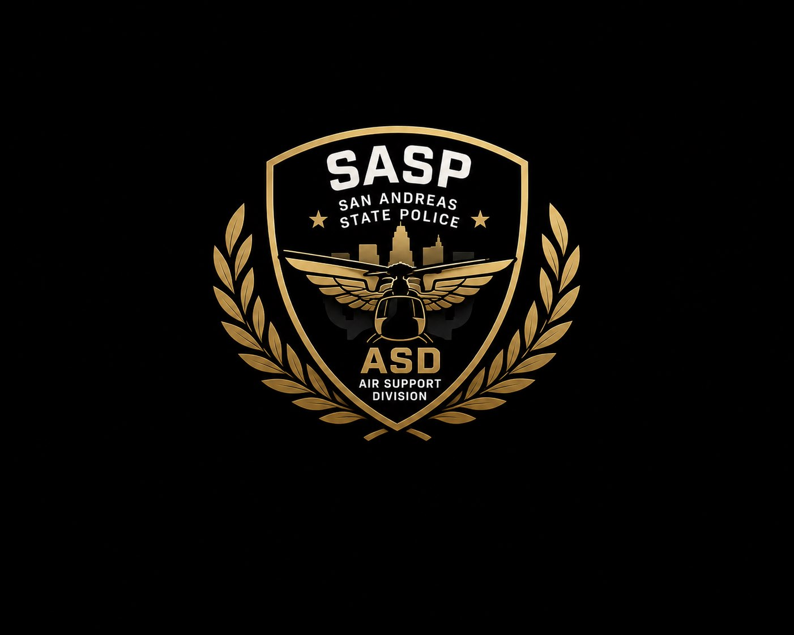

Air Support Division
Suivi aérien, coordination des unités terrestres et maintient du contact visuel.
Garantir un suivi aérien continu lors d'une poursuite afin d'assister les unités terrestres, transmettre des informations précises au Dispatch et assurer la sécurité de l'ensemble des intervenants.
Air-1 : « Dispatch, Air-1 sur secteur. Contact visuel établi. Prise en charge du suivi aérien. »
Dispatch : « Air-1 reçu. Maintenez le contact et guidez les unités au sol. »
Air-1 : « Dispatch, perte de contact visuel. Début des recherches sur le dernier secteur connu. »